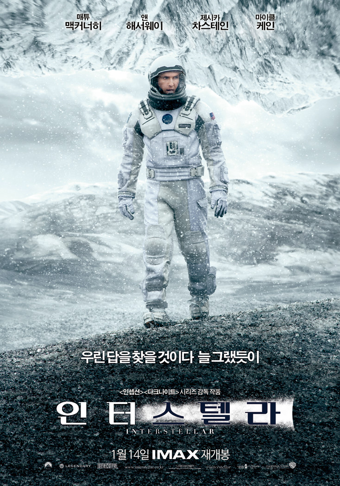

| 인터스텔라 |
 |
세계 각국의 정부와 경제가 완전히 붕괴된 미래가 다가온다. 지난 20세기에 범한 잘못이 전 세계적인 식량 부족을 불러왔고, NASA도 해체되었다. 이때 시공간에 불가사의한 틈이 열리고, 남은 자들에게는 이 곳을 탐험해 인류를 구해야 하는 임무가 지워진다. 사랑하는 가족들을 뒤로 한 채 인류라는 더 큰 가족을 위해, 그들은 이제 희망을 찾아 우주로 간다. 그리고 우린 답을 찾을 것이다. 늘 그랬듯이… |
링크 |
| 올드보이 |
|
아내와 어린 딸과 함께 사는 오대수는 술이 취해 집에 돌아가는 길에 누군가에게 납치당한다. 8평의 좁은 방에서 감금당한 채 매일 군만두를 먹는 대수는 우연히 뉴스를 통해 아내가 살해당했고 아내의 살인범으로 자신이 지목되고 있음을 알게 된다. 15년 동안 탈출을 위해 온갖 방법을 다 쓰던 어느 날, 대수는 갑자기 자유를 얻게 되고, 납치범을 찾아 복수하기 위해 시내의 모든 중국집을 샅샅이 뒤진다. |
링크 |
| 국제시장 |
|
1950년대 한국전쟁 이후로부터 현재에 이르기까지 격변의 시대를 관통하며 살아온 우리 시대 아버지 ‘덕수’(황정민 분), 그는 하고 싶은 것도 되고 싶은 것도 많았지만 평생 단 한번도 자신을 위해 살아본 적이 없다. ‘괜찮다’ 웃어 보이고 ‘다행이다’ 눈물 훔치며 힘들었던 그때 그 시절, 오직 가족을 위해 굳세게 살아온 우리들의 아버지 이야기가 지금부터 시작된다. |
링크 |
| 비긴어게인 |
 |
싱어송라이터인 ‘그레타’(키이라 나이틀리)는 남자친구 ‘데이브’(애덤 리바인)가 메이저 음반회사와 계약을 하게 되면서 뉴욕으로 오게 된다. 그러나 행복도 잠시, 오랜 연인이자 음악적 파트너로서 함께 노래를 만들고 부르는 것이 좋았던 그레타와 달리 스타가 된 데이브의 마음은 어느새 변해버린다. 스타 음반프로듀서였지만 이제는 해고된 ‘댄’(마크 러팔로)은 미치기 일보직전 들른 뮤직바에서 그레타의 자작곡을 듣게 되고 아직 녹슬지 않은 촉을 살려 음반제작을 제안한다. 거리 밴드를 결성한 그들은 뉴욕의 거리를 스튜디오 삼아 진짜로 부르고 싶었던 노래를 만들어가는데… |
링크 |
| 어바웃타임 |
|
모태솔로 팀(돔놀 글리슨)은 성인이 된 날, 아버지(빌 나이)로부터 놀랄만한 가문의 비밀을 듣게 된다. 바로 시간을 되돌릴 수 있는 능력이 있다는 것! 그것이 비록 히틀러를 죽이거나 여신과 뜨거운 사랑을 할 수는 없지만, 여자친구는 만들어 줄 순 있으리.. 꿈을 위해 런던으로 간 팀은 우연히 만난 사랑스러운 여인 메리에게 첫눈에 반하게 된다. 그녀의 사랑을 얻기 위해 자신의 특별한 능력을 마음껏 발휘하는 팀. 어설픈 대시, 어색한 웃음은 리와인드! 뜨거웠던 밤은 더욱 뜨겁게 리플레이! 꿈에 그리던 그녀와 매일매일 최고의 순간을 보낸다. 하지만 그와 그녀의 사랑이 완벽해질수록 팀을 둘러싼 주변 상황들은 미묘하게 엇갈리고, 예상치 못한 사건들이 여기저기 나타나기 시작하는데… 어떠한 순간을 다시 살게 된다면, 과연 완벽한 사랑을 이룰 수 있을까? |
링크 |